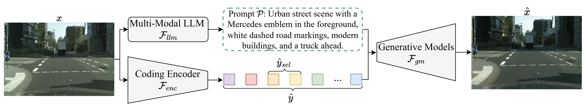
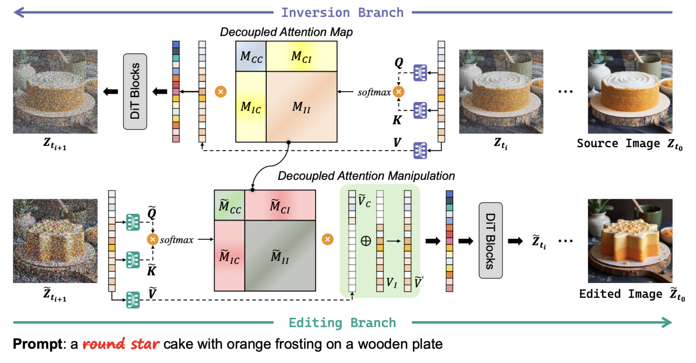
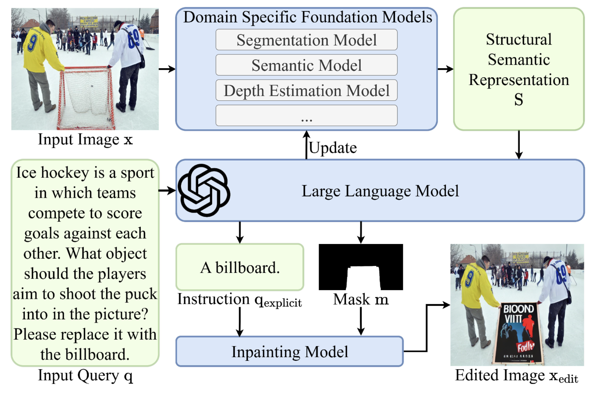

|
Yijia Wang Hi, I am a final-year undergraduate student at the Artificial Intelligence Lab of Southern University of Science and Technology, under the supervision of Professor Zhihai He (IEEE Fellow). I also spent an impressive summer in 2024 at Stanford University, where I deepened my understanding of algorithms and optimizations. My research is focused on image generation, and its practical applications, including image coding and image super-resolution. I am also interested in developing efficient image generation models that offer faster speed and higher quality. My goal is to address key challenges in the image generation process, thereby improving the performance of downstream tasks that are based on generation methods. Currently, I am seeking PhD opportunities to further explore the key issues in image generation technology. I aim to develop advanced algorithms that can significantly enhance the quality and speed of image generation, and I am eager to apply these techniques to real-world scenarios to make a positive impact. |
{kind=link}
News[11/04/2025] Congratulations! I have been awarded the Guo Xie Birong Scholarship. This is a significant achievement, and I’m very grateful for the recognition of my academic efforts. [10/27/2025] Congratulations! Our team has won the Silver Award in the 2025 China International University Students Innovation and Entrepreneurship Competition of Guangdong Province. Among the 484,500 teams that participated, only 234 teams (Top 0.07%) received this prestigious award. [09/09/2025] Two of my patents have been accepted for examination. |
Research Experience(* denotes equal contributions.) |
|  |
Under review [PDF] Text + tiny latent steer a generative model to reconstruct images at ultra-low bitrates. |
|  |
Under review [PDF] We improved Rectified Flow editing via a Runge-Kutta solver for accurate inversion and decoupled attention for precise control. |
|  |
Under review [PDF] We proposed CIELR for complex image editing by using LLMs to reason about implicit instructions and convert them into simple editing steps, all without fine-tuning. |
Education |
|
Stanford University
06/2024 - 08/2024, Stanford, California Exchange Student GPA: 4.00/4.00 |
|
|
Southern University of Science and Technology
08/2022 - present, Shenzhen, China Bachelor of Engineering in Electronic and Electrical Engineering GPA: 3.90/4.00 Advisor: Professor Zhihai He |
Scholarships/Awards[11/2025] 2024-2025 BYD Scholarship [09/2025] 2024-2025 Guo Xie Birong Scholarship [09/2025] 2024-2025 First-Class Scholarship for Outstanding Students, SUSTech [08/2025] Silver Award in 2025 China International University Students Innovation and Entrepreneurship Competition, Guangdong [09/2024] 2023-2024 Second-Classs Scholarship for Outstanding Students, SUSTech [01/2024] Second Prize in the 2023 China Undergraduate Mathematical Contest in Modeling, Guangdong [09/2023] 2022-2023 Star of Practice Scholarship, SUSTech [09/2023] 2022-2023 First-Class Scholarship for Outstanding Students, SUSTech |